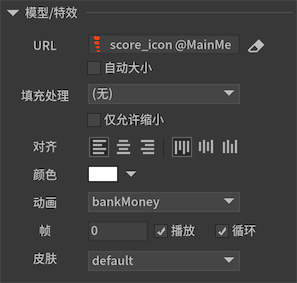

3D内容装载器
3D内容装载器的用途是动态载入比较复杂的资源，例如骨骼动画、模型（暂未支持）、粒子特效（暂未支持）等。点击主工具栏中的 按钮，生成一个3D内容装载器。
按钮，生成一个3D内容装载器。
实例属性

URLURL指向的资源，目前只支持Spine动画资源或者龙骨动画资源。如果选中，则发布时会自动清空这里设置的值。填充处理当需要显示的内容与装载器大小不相同时使用的缩放策略。无内容不会发生任何缩放。等比缩放（显示全部）按照最小比率缩放，不变形，一边可能留空白。等比缩放（无边框）按照最大比率缩放，不变形，一边可能超出装载器矩形范围。等比缩放（适应高度）内容高度占满装载器高度，宽度等比缩放。等比缩放（适应宽度）内容宽度占满装载器宽度，高度等比缩放。自由缩放内容缩放至占满装载器矩形范围，不保持比例。
备注：装载器没有剪裁功能，如果要剪裁超出部分，需要把装载器放入一个溢出隐藏的组件。
仅允许缩小勾选后，在处理填充处理时，装载器加载的内容将永远不被放大，但可以被缩小。对齐设置装载器内容的对齐方式。颜色修改颜色，使装载器的内容产生变色的效果。动画如果内容是骨骼动画，可以设置骨骼动画的动画名称。帧如果内容是骨骼动画，可以设置骨骼动画的当前帧。播放如果内容是骨骼动画，可以设置骨骼动画是播放还是停止。循环如果内容是骨骼动画，可以设置骨骼动画是否循环播放。皮肤如果内容是骨骼动画，可以设置骨骼动画的皮肤。
GLoader3D
装载器支持动态创建，动态创建装载器一定要设置装载器的大小，否则显示不出来。例如：
GLoader3D aLoader = new GLoader3D(); |
目前GLoader3D只支持载入骨骼动画。如果是UI包里的资源，那么通过“ui://包名/图片名”这种格式的地址就可以载入。但实际项目中，可能我们还需要载入和显示一些不在UI包里的，我们称之为“外部”的骨骼动画，这时我们可以直接调用API setSpine 或者 setDragonBones 设置。